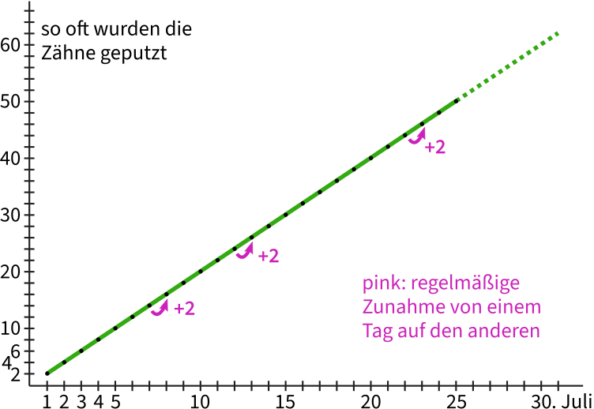
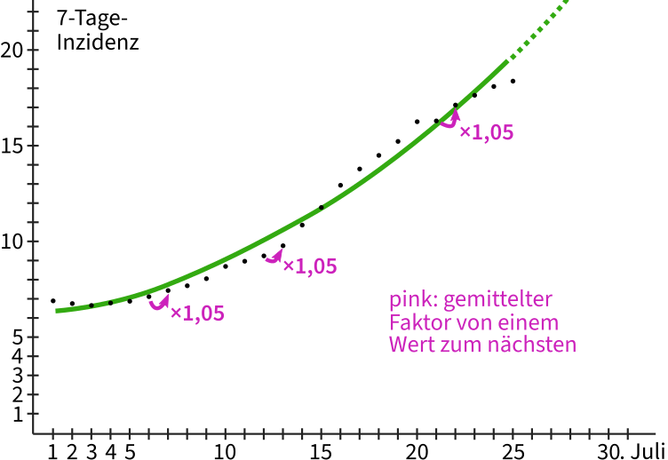

@charak
@charakExponetielles Wachstum
Es gibt Phänomene, die können wir Menschen sehr schlecht einschätzen. Dazu gehört das exponentielle Wachstum, von dem in den letzten Monaten im Zusammenhang mit Covid-19-Infektionen immer wieder die Rede war. Zunächst eine Schätzfrage, die nichts mit Viren zu tun hat:
Da ist ein kleiner Teich, in dem Seerosen wachsen. Es herrschen dort optimale Bedingungen für die hübschen Wasserblumen und sie verbreiten sich ungehindert auf der Teichoberfläche. Die Seerosen wachsen sogar so gut, dass sie jeden Tag die doppelte Fläche bedecken wie am Vortag.
Gepflanzt wurde die erste Seerose vor dreißig Tagen. Jetzt, wo du den Teich besuchst, ist ungefähr die Hälfte der Wasseroberfläche mit Seerosen überwuchert. Es hat also dreißig Tage gedauert, bis der See halb zugewachsen war. Wenn die Seerosen genauso schnell weiterwachsen, wie viele Tage wird es noch dauern, bis der Teich komplett zugewachsen ist?
Gib erst mal eine grobe Schätzung ab und überlege dir, wie du auf diese Anzahl von Tagen kommst. Denke nicht zu kompliziert, denn die Frage lässt sich ohne große Rechnerei beantworten. Lies die Frage eventuell noch einmal genau durch und lass dich nicht reinlegen!
Sie wachsen wirklich sehr schnell, diese Seerosen. Wenn sich die bedeckte Fläche täglich verdoppelt und der See jetzt halb voll ist, – tja, dann ist der Teich schon am nächsten Tag komplett bewachsen! (Die dreißig Tage zuvor sind für die Antwort unwichtig, es hätten auch zehn oder siebzig sein können)
Exponentielles Wachstum geht überraschend schnell. Es ist nicht so entscheidend, wie lange ein Prozess bis zum jetzigen Wert gebraucht hat, sondern welche Wachstumsrate er hat. Hier mal zum Vergleich ein lineares Wachstum, das ist uns Menschen viel vertrauter:

Im Diagramm sieht man von links nach rechts die Zeit in Tagen. Ganz links den 1. Juli, am rechten Ende den 31. Juli. Die Höhe gibt in diesem Beispiel an, wie oft jemand diesen Monat insgesamt Zähne geputzt hat (täglich zweimal, ganz ohne Ausnahme). Die Werte steigen allmählich und in gerader Linie an, jeden Tag kommt zweimal Zähneputzen dazu. Die gestrichelte Linie deutet an, wie sich die Werte mathematisch in den kommenden Tagen entwickeln dürften. Das verläuft sehr offensichtlich und wir können das leicht abschätzen.
Beim exponentiellen Wachstum dagegen wird nicht jeden Tag ein fester Wert addiert, sondern zwischen den Werten liegt ein stabiler Faktor. Damit wird der Wert vom Vortrag multipliziert. Im Diagramm ergibt sich eine Kurve, die erst recht langsam, dann aber doch immer steiler ansteigt:

Das Bild zeigt aber kein Seerosen-Wachstum mit Verdoppelung (= Faktor 2), sondern als schwarze Punkte die aktuellen Inzidenzzahlen in Deutschland. Das heißt, wie viele Neuinfektionen[1] registriert wurden, runtergerechnet auf 100.000 Menschen (zur besseren Vergleichbarkeit) und gemittelt auf die vergangenen 7 Tage (um Meldeflauten am Wochenende auszugleichen). Die grüne Kurve habe ich mathematisch errechnet und so gut wie möglich zwischen die Punkte gelegt. Der gestrichelte Teil gibt an, wie sich die Infektionszahlen entwickeln würden, wenn der Wachstumsfaktor bei ca. 1,05 bleibt wie in den ersten Juliwochen.
Die Inzidenzwerte habe ich übrigens von Our World in Data, einer Organisation, die Forschungsdaten aus der ganzen Welt sammelt und als Diagramme darstellt. Der derzeite Anstieg kommt wohl daher, weil sich auch in Deutschland die Delta-Variante des Corona-Viruses durchgesetzt hat. Sie wurde in Indien entdeckt und ist ansteckender als die ursprüngliche Version aus China. Darum verbreitet sich die Variante stärker … bis irgendwann eine noch ansteckendere Virus-Version die Vorherrschaft übernimmt.
Bei exponentiellem Wachstum dümpeln die Werte immer eine Weile vor sich hin, um plötzlich und scheinbar unerwartet schnell zu steigen. Je größer dann der Wert, desto stärker wächst er weiter. Natürlich müssen sich unsere Inzidenzzahlen nicht so entwickeln, wie es eine mathematische Formel vorhersagt, schließlich bestimmen wir den konkreten Verlauf selbst. Im Diagramm sieht man, dass die aktuellen Werte mal ober-, mal unterhalb der errechneten grünen Kurve liegen.
Diese Pandemie ist trotz derzeit niedriger Zahlen noch nicht vorbei und unsere Nachlässigkeit macht es dem Virus leicht. Zwar sind in Deutschland inzwischen gut 50% vollständig geimpft, darum gibt es weniger schwere Krankheitsverläufe und Todesfälle – trotzdem: Covid-19 ist kein Schnupfen. Gebt auf euch acht!
Lust auf mehr nerdige Mathematik? Dass wir Menschen doch manche Dinge exponentiell wahrnehmen (z.B. Lautstärke oder Helligkeit), zeige ich in meinem Artikel über gleichmäßige Graustufen. Und wie einfache Formeln komplizierte Muster erzeugen, könnt ihr bei meinem Automaten für Pixelmuster ausprobieren.
[1] Mein Vergleich mit dem Zähneputzen hinkt übrigens. Dort ergibt sich die schöne gerade Linie nämlich nur, weil ich die vergangenen Putzvorgänge aufsummiere – sonst wäre der Wert jeden Tag einfach 2. Bei der Inzidenzzahl wird dagegen nicht aufsummiert, sondern allein die neuen Infektionen an jedem einzelnen Tag betrachtet, unabhängig von den vorangeganenen Tagen. [↑]